2024
ICML
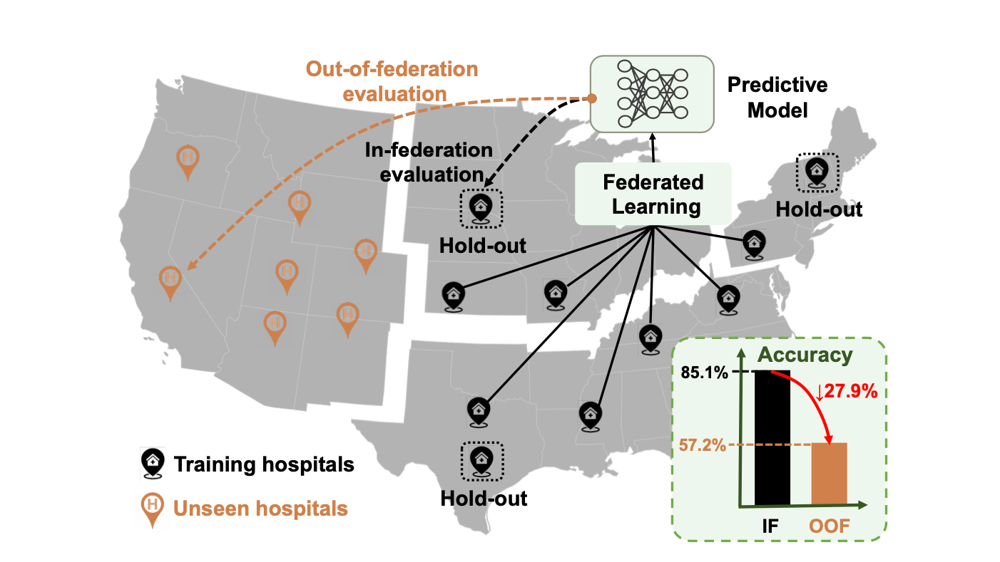Beyond the Federation: Topology-aware Federated Learning for Generalization to Unseen Clients
In Proceedings of the International Conference on Machine Learning, 2024. (acceptance rate 27.5%)
PaperCode@inproceedings{ma2024beyond,
title={Beyond the Federation: Topology-aware Federated Learning for Generalization to Unseen Clients},
author={Ma, Mengmeng and Li, Tang and Peng, Xi},
booktitle={Proceedings of the International Conference on Machine Learning (ICML)},
year={2024}
}ICML

Ensemble Pruning for Out-of-distribution Generalization
In Proceedings of the International Conference on Machine Learning, 2024. (acceptance rate 27.5%)
PaperCode@inproceedings{qiao2024ensemble,
title={Ensemble Pruning for Out-of-distribution Generalization},
author={Qiao, Fengchun and Peng, Xi},
booktitle={Proceedings of the International Conference on Machine Learning (ICML)},
year={2024}
}ECCV
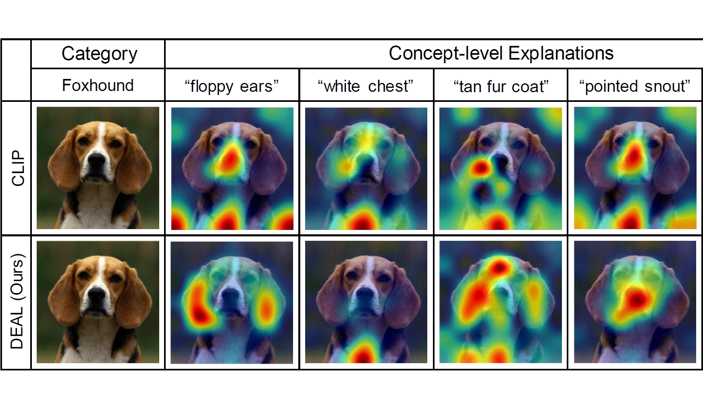DEAL: Disentangle and Localize Concept-level Explanations for VLMs
In Proceedings of the European Conference on Computer Vision, 2024. (acceptance rate 27.9%)
PaperCode@inproceedings{li2024deal,
title={DEAL: Disentangle and Localize Concept-level Explanations for VLMs},
author={Li, Tang and Ma, Mengmeng and Peng, Xi},
booktitle={Proceedings of the European Conference on Computer Vision (ECCV)},
year={2024}
}CIKM
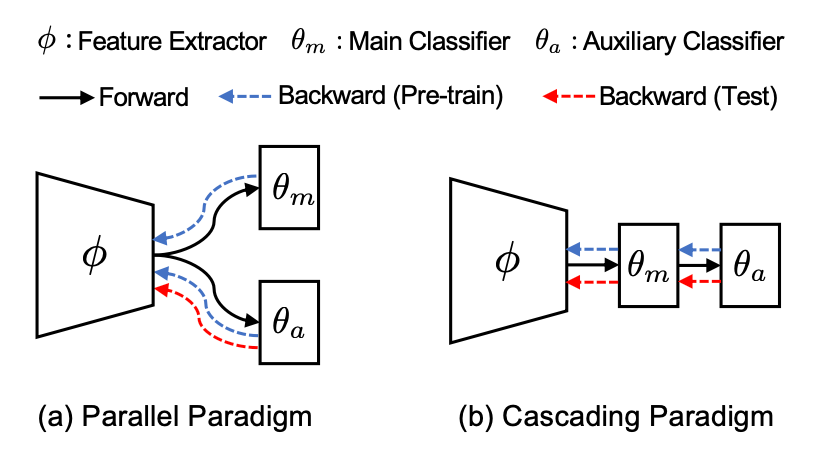Adaptive Cascading Network for Continual Test-Time Adaptation
In Proceedings of the Conference on Information and Knowledge Management (CIKM) 2024. (acceptance rate 23%)
PaperCode@inproceedings{li2024deal,
title={DEAL: Disentangle and Localize Concept-level Explanations for VLMs},
author={Li, Tang and Ma, Mengmeng and Peng, Xi},
booktitle={Proceedings of the European Conference on Computer Vision (ECCV)},
year={2024}
}2023
ICLR

Topology-aware Robust Optimization for Out-of-Distribution Generalization
In Proceedings of the International Conference on Learning Representations, 2023. (acceptance rate 31.8%)
PaperCode@inproceedings{qiao2023topology,
title={Topology-aware Robust Optimization for Out-of-Distribution Generalization},
author={Qiao, Fengchun and Peng, Xi},
booktitle={Proceedings of the International Conference on Learning Representations (ICLR)},
year={2023}
}CVPR
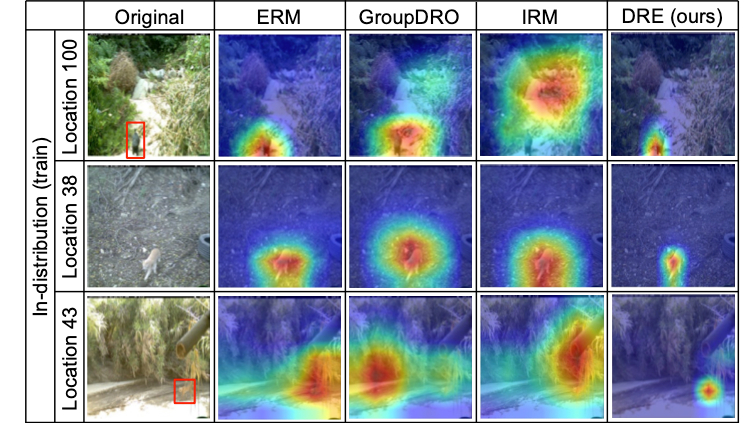Are Data-driven Explanations Robust against Out-of-distribution Data?
In Proceedings of the IEEE Conference on Computer Vision and Pattern Recognition, 2023. (acceptance rate 25.8%)
PaperVideoCode@inproceedings{li2023data,
title={Are Data-driven Explanations Robust against Out-of-distribution Data?},
author={Li, Tang and Qiao, Fengchun and Ma, Mengmeng and Peng, Xi},
booktitle={Proceedings of the IEEE/CVF Conference on Computer Vision and Pattern Recognition},
pages={3821--3831},
year={2023}
}ICCV

Learning from Semantic Alignment between Unpaired Multiviews for Egocentric Video Recognition
In Proceedings of IEEE International Conference on Computer Vision (ICCV) 2023. (acceptance rate 26.8%)
PaperCode@inproceedings{Wang2023LearningFS,
title={Learning from Semantic Alignment between Unpaired Multiviews for Egocentric Video Recognition},
author={Qitong Wang and Long Zhao and Liangzhe Yuan and Ting Liu and Xi Peng},
booktitle={Proceedings of the International Conference on Computer Vision (ICCV)},
year={2023},
url={https://api.semanticscholar.org/CorpusID:261064926}}
}CVIU
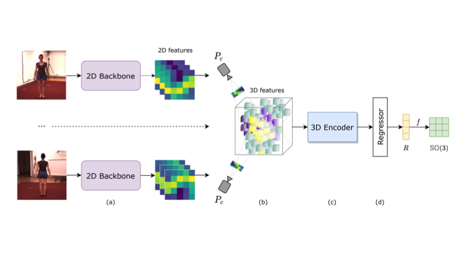Deep learning-based estimation of whole-body kinematics from multi-view images
Computer Vision and Image Understanding, 2023. (impact factor 4.9)
PaperCode@article{nguyen2023deep,
title={Deep learning-based estimation of whole-body kinematics from multi-view images},
author={Nguyen, Kien X and Zheng, Liying and Hawke, Ashley L and Carey, Robert E and Breloff, Scott P and Li, Kang and Peng, Xi},
journal={Computer Vision and Image Understanding},
volume={235},
pages={103780},
year={2023},
publisher={Elsevier}
}2022
TPAMI

Out-of-Domain Generalization from a Single Source: An Uncertainty Quantification Approach
IEEE Transactions on Pattern Analysis and Machine Intelligence, 2022.
Paper@article{peng2022out,
title={Out-of-Domain Generalization From a Single Source: An Uncertainty Quantification Approach},
author={Peng, Xi and Qiao, Fengchun and Zhao, Long},
journal={IEEE Transactions on Pattern Analysis and Machine Intelligence},
year={2022},
publisher={IEEE}
}
NeurIPS
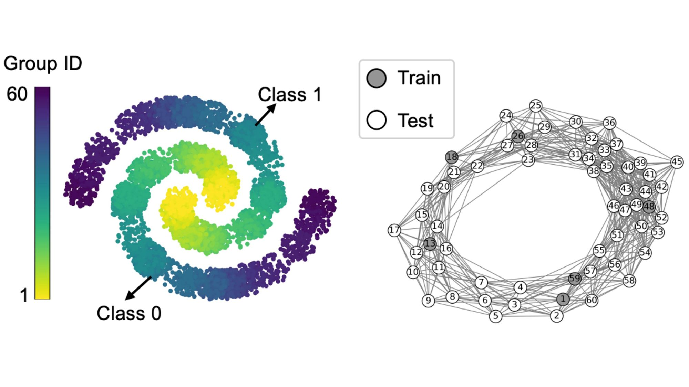Graph-Relational Distributionally Robust Optimization
In Proceedings of the 36th Conference on Neural Information Processing Systems Workshops.
PaperVideo@inproceedings{qiao2022graph,
title={Graph-Relational Distributionally Robust Optimization},
author={Qiao, Fengchun and Peng, Xi},
booktitle={NeurIPS 2022 Workshop on Distribution Shifts: Connecting Methods and Applications}
}
TMM

Region-aware Arbitrary-shaped Text Detection with Progressive Fusion
IEEE Transactions on Multimedia, 2022.
Paper@article{wang2022region,
title={Region-aware Arbitrary-shaped Text Detection with Progressive Fusion},
author={Wang, Qitong and Fu, Bin and Li, Ming and He, Junjun and Peng, Xi and Qiao, Yu},
journal={IEEE Transactions on Multimedia},
year={2022},
publisher={IEEE}
}
CVPR
Are multimodal transformers robust to missing modality?
In Proceedings of the IEEE Conference on Computer Vision and Pattern Recognition, 2022. (acceptance rate 25.3%)
PaperVideo@inproceedings{ma2022multimodal,
title={Are Multimodal Transformers Robust to Missing Modality?},
author={Ma, Mengmeng and Ren, Jian and Zhao, Long and Testuggine, Davide and Peng, Xi},
booktitle={Proceedings of the IEEE/CVF Conference on Computer Vision and Pattern Recognition},
pages={18177--18186},
year={2022}
}
CVPR

Symmetry and Uncertainty-Aware Object SLAM for 6DoF Object Pose Estimation
In Proceedings of the IEEE Conference on Computer Vision and Pattern Recognition, 2022. (acceptance rate 25.3%)
Paper@inproceedings{merrill2022symmetry,
title={Symmetry and Uncertainty-Aware Object SLAM for 6DoF Object Pose Estimation},
author={Merrill, Nathaniel and Guo, Yuliang and Zuo, Xingxing and Huang, Xinyu and Leutenegger, Stefan and Peng, Xi and Ren, Liu and Huang, Guoquan},
booktitle={Proceedings of the IEEE/CVF Conference on Computer Vision and Pattern Recognition},
pages={14901--14910},
year={2022}
}
2021
NeurIPS
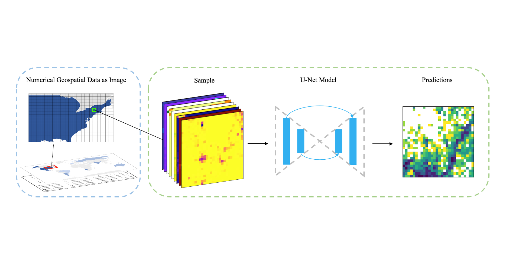Deep Learning for Spatiotemporal Modeling of Urbanization
Accepted & Best Paper Awarded by NeurIPS 2021 Machine Learning in Public Health Workshop.
PaperVideoPress@article{li2021deep,
title={Deep Learning for Spatiotemporal Modeling of Urbanization},
author={Tang Li and Gao, Jing and Xi Peng},
journal={Advances in Neural Information Processing Systems Workshops (Best Paper Award)},
year={2021}
}
CVPR

Uncertainty-guided Model Generalization to Unseen Domains
In Proceedings of the IEEE Conference on Computer Vision and Pattern Recognition, 2021. (acceptance rate 23.4%)
PaperVideo@inproceedings{qiao2021uncertainty,
title={Uncertainty-guided model generalization to unseen domains},
author={Qiao, Fengchun and Peng, Xi},
booktitle={Proceedings of the IEEE/CVF Conference on Computer Vision and Pattern Recognition},
pages={6790--6800},
year={2021}
}
CVPR

Learning View-Disentangled Human Pose Representation by Contrastive Cross-View Mutual Information Maximization
@inproceedings{zhao2021learning,
title={Learning view-disentangled human pose representation by contrastive cross-view mutual information maximization},
author={Zhao, Long and Wang, Yuxiao and Zhao, Jiaping and Yuan, Liangzhe and Sun, Jennifer J and Schroff, Florian and Adam, Hartwig and Peng, Xi and Metaxas, Dimitris and Liu, Ting},
booktitle={Proceedings of the IEEE/CVF Conference on Computer Vision and Pattern Recognition},
pages={12793--12802},
year={2021}
}
AAAI
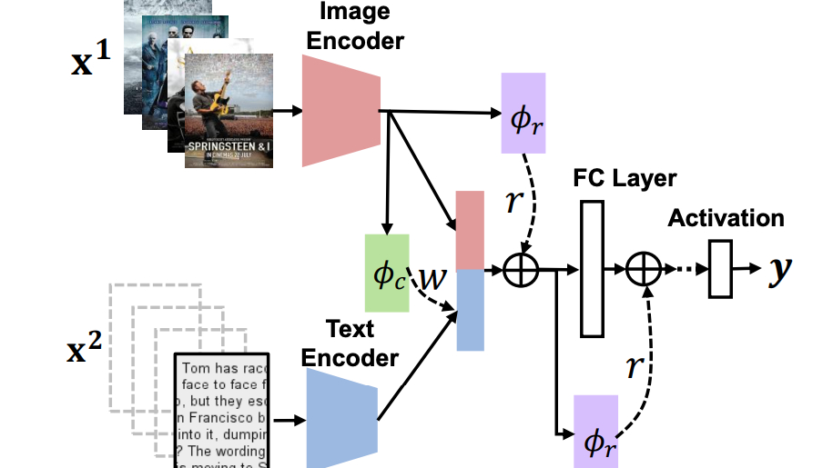SMIL: Multimodal Learning with Severely Missing Modality
In Proceedings of the Association for the Advancement of Artificial Intelligence, 2020. (acceptance rate 21%)
PaperVideoVideo - 15min@inproceedings{ma2021smil,
title={SMIL: Multimodal learning with severely missing modality},
author={Ma, Mengmeng and Ren, Jian and Zhao, Long and Tulyakov, Sergey and Wu, Cathy and Peng, Xi},
booktitle={Proceedings of the AAAI Conference on Artificial Intelligence},
volume={35},
number={3},
pages={2302--2310},
year={2021}
}
ICLR

A Good Image Generator Is What You Need for High-Resolution Video Synthesis
In Proceedings of the International Conference on Learning Representations, 2021.
PaperVideo@inproceedings{tian2020good,
title={A Good Image Generator Is What You Need for High-Resolution Video Synthesis},
author={Tian, Yu and Ren, Jian and Chai, Menglei and Olszewski, Kyle and Peng, Xi and Metaxas, Dimitris N and Tulyakov, Sergey},
booktitle={International Conference on Learning Representations},
year={2020}
}
NSDI

Adapting Wireless Mesh Network Configuration from Simulation to Reality via Deep Learning based Domain Adaptation
In Proceedings of USENIX Symposium on Networked Systems Design and Implementation, 2021.
Paper@inproceedings{shi2021adapting,
title={Adapting wireless mesh network configuration from simulation to reality via deep learning based domain adaptation},
author={Shi, Junyang and Sha, Mo and Peng, Xi},
booktitle={18th USENIX Symposium on Networked Systems Design and Implementation (NSDI 21)},
pages={887--901},
year={2021}
}
2020
CVPR

Learning to Learn Single Domain Generalization
In Proceedings of the IEEE Conference on Computer Vision and Pattern Recognition, 2020. (acceptance rate 22%)
Paper@inproceedings{qiao2020learning,
title={Learning to learn single domain generalization},
author={Qiao, Fengchun and Zhao, Long and Peng, Xi},
booktitle={Proceedings of the IEEE/CVF Conference on Computer Vision and Pattern Recognition},
pages={12556--12565},
year={2020}
}
NeurIPS
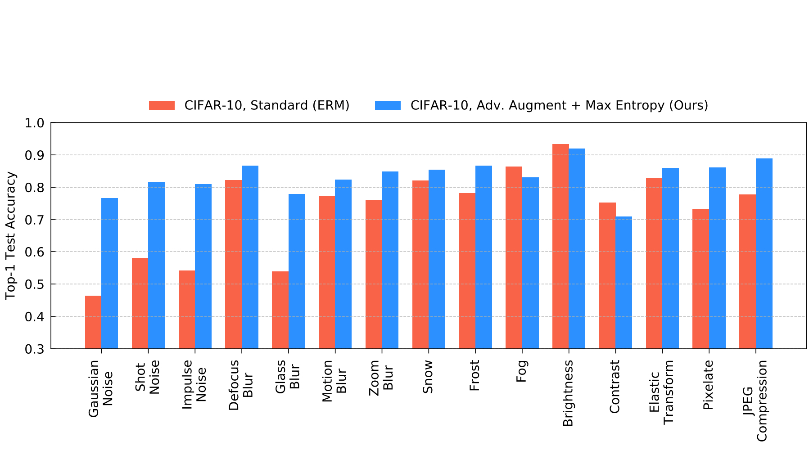Maximum-Entropy Adversarial Data Augmentation for Improved Generalization and Robustness
In Proceedings of Advances in Neural Information Processing Systems, 2020. (acceptance rate 20%)
Paper@article{zhao2020maximum,
title={Maximum-entropy adversarial data augmentation for improved generalization and robustness},
author={Zhao, Long and Liu, Ting and Peng, Xi and Metaxas, Dimitris},
journal={Advances in Neural Information Processing Systems},
volume={33},
pages={14435--14447},
year={2020}
}
CVPR

Knowledge as Priors: Cross-Modal Knowledge Generalization for Datasets without Superior Knowledge
In Proceedings of the IEEE Conference on Computer Vision and Pattern Recognition, 2020. (acceptance rate 22%)
Paper@inproceedings{zhao2020knowledge,
title={Knowledge as priors: Cross-modal knowledge generalization for datasets without superior knowledge},
author={Zhao, Long and Peng, Xi and Chen, Yuxiao and Kapadia, Mubbasir and Metaxas, Dimitris N},
booktitle={Proceedings of the IEEE/CVF Conference on Computer Vision and Pattern Recognition},
pages={6528--6537},
year={2020}
}
IJCV

Towards Image-to-Video Translation: A Structure-Aware Approach via Multi-stage Generative Adversarial Networks
International Journal of Computer Vision, 2020.
Paper@article{zhao2020towards,
title={Towards image-to-video translation: A structure-aware approach via multi-stage generative adversarial networks},
author={Zhao, Long and Peng, Xi and Tian, Yu and Kapadia, Mubbasir and Metaxas, Dimitris N},
journal={International Journal of Computer Vision},
volume={128},
number={10},
pages={2514--2533},
year={2020},
publisher={Springer}
}
IJCV
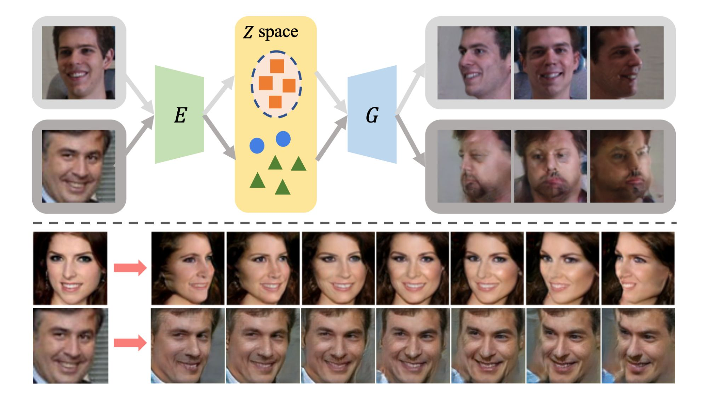CR-GAN: Learning Complete Representations for Multi-view Generation
International Journal of Computer Vision, 2020. (under review)
Paper@inproceedings{tian2018cr,
title={CR-GAN: learning complete representations for multi-view generation},
author={Tian, Yu and Peng, Xi and Zhao, Long and Zhang, Shaoting and Metaxas, Dimitris N},
booktitle={Proceedings of the 27th International Joint Conference on Artificial Intelligence},
pages={942--948},
year={2018}
}

Automatic Health Problem Detection from Gait Videos Using Deep Neural Networks
arXiv, 2020.
Paper@article{mehrizi2019automatic,
title={Automatic health problem detection from gait videos using deep neural networks},
author={Mehrizi, Rahil and Peng, Xi and Zhang, Shaoting and Liao, Ruisong and Li, Kang},
journal={arXiv preprint arXiv:1906.01480},
year={2019}
}
2019
NeurIPS

Rethinking Kernel Methods for Node Representation Learning on Graphs
In Proceedings of Advances in Neural Information Processing Systems, 2019. (*contributed equally) (acceptance rate 21%)
PaperPosterCode@article{tian2019rethinking,
title={Rethinking kernel methods for node representation learning on graphs},
author={Tian, Yu and Zhao, Long and Peng, Xi and Metaxas, Dimitris},
journal={Advances in neural information processing systems},
volume={32},
year={2019}
}
NeurIPS
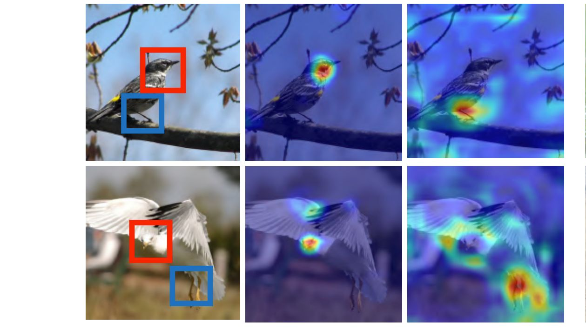Semantic-Guided Multi-Attention Localization for Zero-Shot Learning
In Proceedings of Advances in Neural Information Processing Systems, 2019. (acceptance rate 21%)
Paper@article{zhu2019semantic,
title={Semantic-guided multi-attention localization for zero-shot learning},
author={Zhu, Yizhe and Xie, Jianwen and Tang, Zhiqiang and Peng, Xi and Elgammal, Ahmed},
journal={Advances in Neural Information Processing Systems},
volume={32},
year={2019}
}
CVPR
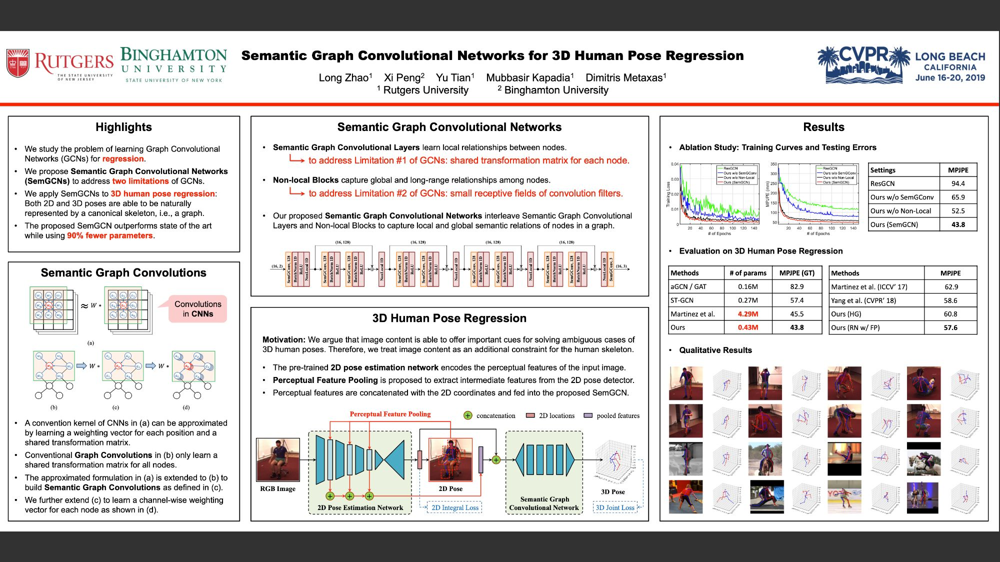Semantic Graph Convolutional Networks for 3D Human Pose Regression
In Proceedings of the IEEE Conference on Computer Vision and Pattern Recognition, 2019. (acceptance rate 22%)
PaperPosterCode@inproceedings{zhao2019semantic,
title={Semantic graph convolutional networks for 3d human pose regression},
author={Zhao, Long and Peng, Xi and Tian, Yu and Kapadia, Mubbasir and Metaxas, Dimitris N},
booktitle={Proceedings of the IEEE/CVF conference on computer vision and pattern recognition},
pages={3425--3435},
year={2019}
}
KDD

Scalable Global Alignment Graph Kernel Using Random Features: From Node Embedding to Graph Embedding
In Proceedings of the 25th ACM SIGKDD International Conference on Knowledge Discovery and Data Mining, 2019. (acceptance rate 9.2%)
Paper@inproceedings{wu2019scalable,
title={Scalable global alignment graph kernel using random features: From node embedding to graph embedding},
author={Wu, Lingfei and Yen, Ian En-Hsu and Zhang, Zhen and Xu, Kun and Zhao, Liang and Peng, Xi and Xia, Yinglong and Aggarwal, Charu},
booktitle={Proceedings of the 25th ACM SIGKDD International Conference on Knowledge Discovery \& Data Mining},
pages={1418--1428},
year={2019}
}
ICCV
AdaTransform: Adaptive Data Transformation
In Proceedings of the IEEE International Conference on Computer Vision, 2019. (acceptance rate 4.7%)
Paper@inproceedings{tang2019adatransform,
title={Adatransform: Adaptive data transformation},
author={Tang, Zhiqiang and Peng, Xi and Li, Tingfeng and Zhu, Yizhe and Metaxas, Dimitris N},
booktitle={Proceedings of the IEEE/CVF International Conference on Computer Vision},
pages={2998--3006},
year={2019}
}
BMVC

Construct Dynamic Graphs for Hand Gesture Recognition via Spatial-Temporal Attention
In British Machine Vision Conference, 2019.
PaperCode@inproceedings{chen2019construct,
title={Construct Dynamic Graphs for Hand Gesture Recognition via Spatial-Temporal Attention},
author={Chen, Yuxiao and Zhao, Long and Peng, Xi and Yuan, Jianbo and Metaxas, Dimitris N},
booktitle={Proceedings of the British Machine Vision Conference (BMVC)},
year={2019}
}
TPAMI

Towards Efficient U-Nets: A Coupled and Quantized Approach
IEEE Transactions on Pattern Analysis and Machine Intelligence, 2019. (*corresponding author) (impact factor: 17.73)
PaperCode@article{tang2019towards,
title={Towards efficient u-nets: A coupled and quantized approach},
author={Tang, Zhiqiang and Peng, Xi and Li, Kang and Metaxas, Dimitris N},
journal={IEEE transactions on pattern analysis and machine intelligence},
volume={42},
number={8},
pages={2038--2050},
year={2019},
publisher={IEEE}
}
CG
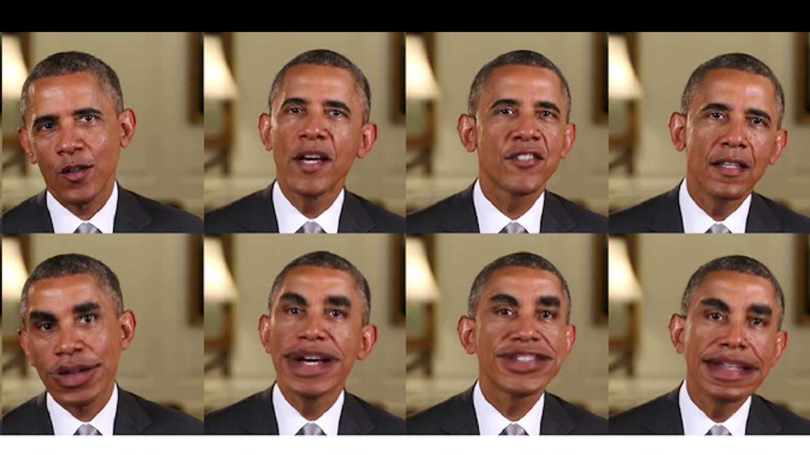Cartoonish sketch-based face editing in videos using identity deformation transfer
Computers & Graphics, 2019.
Paper@article{zhao2019cartoonish,
title={Cartoonish sketch-based face editing in videos using identity deformation transfer},
author={Zhao, Long and Han, Fangda and Peng, Xi and Zhang, Xun and Kapadia, Mubbasir and Pavlovic, Vladimir and Metaxas, Dimitris N},
journal={Computers \& Graphics},
volume={79},
pages={58--68},
year={2019},
publisher={Elsevier}
}
THMS

Predicting 3-D Lower Back Joint Load in Lifting: A Deep Pose Estimation Approach
IEEE Transactions on Human-Machine System, 2019.
Paper@article{mehrizi2019predicting,
title={Predicting 3-D lower back joint load in lifting: A deep pose estimation approach},
author={Mehrizi, Rahil and Peng, Xi and Metaxas, Dimitris N and Xu, Xu and Zhang, Shaoting and Li, Kang},
journal={IEEE Transactions on Human-Machine Systems},
volume={49},
number={1},
pages={85--94},
year={2019},
publisher={IEEE}
}
JOB

A Deep Neural Network-based method for estimation of 3D lifting motions
Journal of Biomechanics, 2019.
Paper@article{mehrizi2019deep,
title={A Deep Neural Network-based method for estimation of 3D lifting motions},
author={Mehrizi, Rahil and Peng, Xi and Xu, Xu and Zhang, Shaoting and Li, Kang},
journal={Journal of biomechanics},
volume={84},
pages={87--93},
year={2019},
publisher={Elsevier}
}